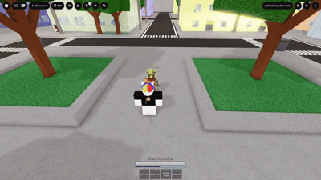

Your evasive is one of the most important tools in your kit as it allows you to avoid combos and high damage moves
Using it cancels a ragdoll early allowing you to bring the fight to them

Cancelling Ragdoll earlyYou can use your evasive or sometimes called a side dash to go around someones block and begin a combo
 Getting around block
Getting around block
Overall your evasive is an important part of your kit that you have to master to play the game
your evasive is on a meter that builds up when you deal or take damage
many characters can take advantage of you when you lack your evasive and begin a combo on you that you can't leave
 Combo after wasting evasive
Combo after wasting evasive
Overall your evasive is what keeps you alive, a jail out of free card allowing you to not be punished immediatley and giving you breathing space.